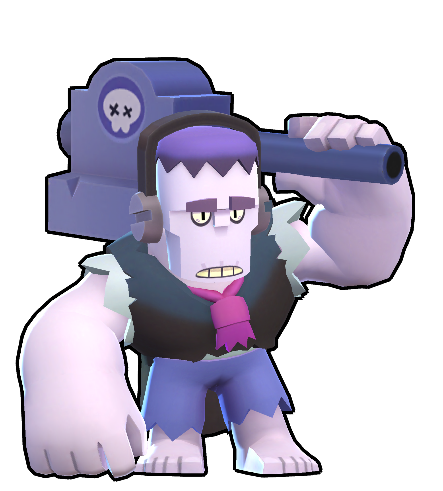
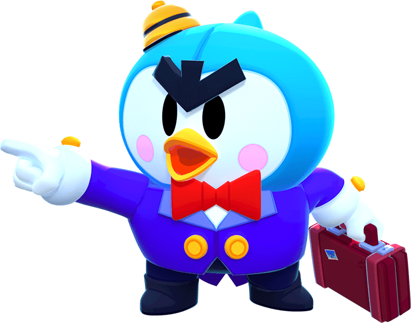

Фрэнк (англ. Frank) — эпический боец класса "Тяжеловес", которого можно получить из любого ящика. Взмах молота Фрэнка порождает взрывную волну. Его неимоверно мощный Супер оглушает противников!

Мистер П. (англ. Mr. P) — мифический боец класса "Стрелок". Мистер П. – сердитый грузчик, который кидает во врагов чемоданы. Его Супер призывает ему на помощь роботов-носильщиков.
